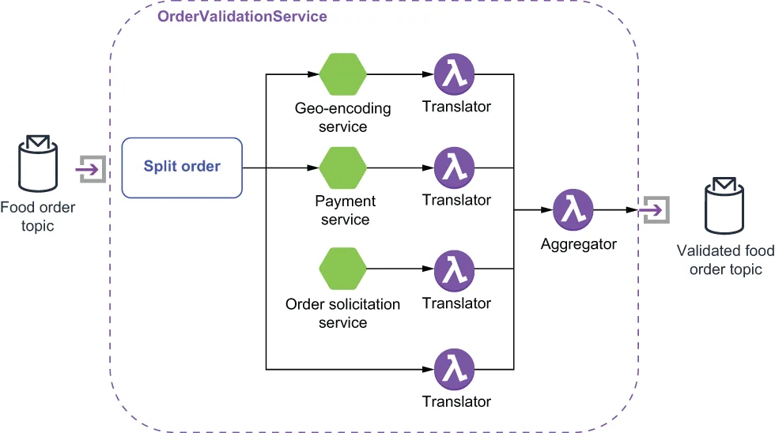

The OrderValidationService receives a message that contains three related pieces of information that must be validated in different ways: the delivery address, the payment information, and the food order itself. Validating each of these pieces of information requires interacting with an external service that may have a slow response time. A naïve approach to this problem would be to perform these steps in a serial fashion, one after another. However, this approach will result in very high latency time for each incoming order. This is due to the fact that when performing these three subtasks sequentially, the overall latency will be equal to the sum of the individual latencies.
OrderValidationService 收到的消息中包含三项相互关联、但必须以不同方式校验的信息：配送地址、支付信息，以及餐品订单本身。校验这三项信息中的每一项，都需要与某个外部服务交互，而这些服务的响应时间可能很慢。针对这个问题，一个天真的做法是以串行方式一个接一个地执行这些步骤。然而，这种做法会给每一笔 incoming 订单带来非常高的延迟。原因在于：当串行执行这三个子任务时，总延迟将等于各个子任务延迟之和。

Figure 8.3 The topology of the OrderValidationService is comprised of several other microservices and functions and utilizes the splitter pattern.
图 8.3 OrderValidationService 的拓扑由若干其他微服务和函数构成，并采用了 splitter（拆分器）模式。
Since there are no dependencies between the results of these intermediate validation services (e.g., the payment validation isn’t dependent on the result of geo-encoding), a better approach would be to have each of these tasks performed in parallel. With parallel execution, the overall latency would be reduced to the latency of the longest-running subtask. In order to achieve this parallel subtask execution, the OrderValidationService will implement the splitter pattern to break out the individual elements of the message so they may be processed with different services. As you can see in figure 8.3, the OrderValidationService is composed of several smaller functions that implement the entire validation process.
由于这些中间校验服务的结果之间并不存在依赖关系（例如，支付校验并不依赖于地理编码的结果），一个更好的做法是让这些任务并行执行。采用并行执行后，总延迟就被降低为耗时最长的那个子任务的延迟。为了实现这种子任务并行执行，OrderValidationService 将采用拆分器（splitter）模式，把消息中的各个元素拆出来，交由不同的服务去处理。从图 8.3 中可以看到，OrderValidationService 由若干更小的函数组成，它们共同实现了整个校验流程。
Our solution should also be efficient in terms of its use of network resources and avoid sending the entire food order item to each microservice, since they only need a portion of the message to perform their processing. As you can see from the code in the next listing, we only send a portion of the message along with the order ID to each of these intermediate services. The order ID will be used to combine the results from these intermediate service calls into a final result, using the aggregator function.
我们的方案在网络资源的使用上也应当高效，避免把整份餐品订单都发给每一个微服务——因为它们只需要消息中的一部分就能完成自己的处理。从下面清单中的代码可以看到，我们只把消息的一部分连同订单 ID 一起发给这些中间服务。而这个订单 ID 将被聚合器（aggregator）函数用来把这些中间服务调用的结果合并成一个最终结果。
Listing 8.1 The OrderValidationService’s Implementation of the splitter pattern
public class OrderValidationService implements Function<FoodOrder, Void> {
private boolean initalized;
private String geoEncoderTopic, paymentTopic,
private String resturantTopic, orderTopic;
@Override
public Void process(FoodOrder order, Context ctx) throws Exception {
if (!initalized) {
init(ctx); ❶
}
ctx.newOutputMessage(geoEncoderTopic, AvroSchema.of(Address.class))
.property("order-id", order.getMeta().getOrderId() + "") ❷
.value(order.getDeliveryLocation()).sendAsync(); ❸
ctx.newOutputMessage(paymentTopic, AvroSchema.of(Payment.class))
.property("order-id", order.getMeta().getOrderId() + "")
.value(order.getPayment()).sendAsync(); ❹
ctx.newOutputMessage(orderTopic, AvroSchema.of(FoodOrderMeta.class))
.property("order-id", order.getMeta().getOrderId() + "")
.value(order.getMeta()).sendAsync(); ❺
ctx.newOutputMessage(resturantTopic, AvroSchema.of(FoodOrder.class))
.property("order-id", order.getMeta().getOrderId() + "")
.value(order).sendAsync(); ❻
return null;
}
private void init(Context ctx) {
geoEncoderTopic = ctx.getUserConfigValue("geo-topic").toString();
paymentTopic = ctx.getUserConfigValue("payment-topic").toString();
resturantTopic = ctx.getUserConfigValue("restaurant-topic").toString();
orderTopic = ctx.getUserConfigValue("aggregator-topic").toString();
initalized = true;
}
❶ Initialize all of the topic names so we know where to publish the messages.
❶ 初始化全部主题名，这样我们就知道该把消息发布到哪里。
❷ Add the order-ID to the message properties so we can use it to correlate the results.
❷ 把订单 ID 加到消息属性中，以便我们用它来关联各个结果。
❸ Send just the address element of the message to the GeoEncoder Service.
❸ 只把消息中的地址元素发给 GeoEncoder 服务。
❹ Send just the Payment element of the message to the Payment Service.
❹ 只把消息中的支付元素发给 Payment 服务。
❺ Send the food order metadata to the aggregator topic directly, since we don’t need to process it.
❺ 把餐品订单的元数据直接发到聚合器主题，因为我们不需要处理它。
❻ Send just the FoodOrder element of the message to the OrderSolicititation Service.
❻ 只把消息中的 FoodOrder 元素发给 OrderSolicitation 服务。
The asynchronous nature of the processing of these individual message elements makes collecting the results challenging. Each of these elements is processed by different services with different response times (e.g., the geo-encoder will invoke a web service, the payment service needs to communicate with a bank to secure the funds, and each restaurant will need to respond manually to either accept or reject the order). These types of issues make the process of combing multiple, but related, messages complicated, which is where the aggregator pattern comes into play.
这些消息元素各自的处理是异步的，这使得收集结果变得颇具挑战。每一个元素都由不同的服务处理，而这些服务的响应时间各不相同（例如，地理编码器要调用一个 Web 服务，支付服务需要与银行通信以锁定资金，而每家餐厅都需要人工做出接受或拒绝订单的响应）。这类问题让“把多条相互关联的消息合并起来”这件事变得复杂，而这正是聚合器（aggregator）模式发挥作用的地方。
An aggregator is a stateful component that receives all of the response messages from the invoked services (e.g., GeoEncoder, Payment, etc.) and correlates the responses back together using the order ID. Once a complete set of responses has been collected, a single aggregated message is published to the output topic. When you choose to implement the aggregator pattern, you must consider the following three key factors:
聚合器是一个有状态的组件，它接收来自各个被调用服务（例如 GeoEncoder、Payment 等）的全部响应消息，并利用订单 ID 把这些响应重新关联起来。一旦收集齐一整套响应，就会有一条聚合后的消息被发布到输出主题。当你选择实现聚合器模式时，必须考虑以下三个关键因素：
Correlation—How are messages correlated together?
关联（Correlation）——各条消息之间是如何关联起来的？
Completeness—When are we ready to publish the resulting message?
完整性（Completeness）——我们什么时候才算准备好发布结果消息？
Aggregation—How are the incoming messages combined into a single result?
聚合（Aggregation）——传入的各条消息是如何合并成单一结果的？
For our particular use case, we have decided that the order ID will serve as the correlation ID, which will help us identify which response messages belong together. The result will be considered complete only after we have received all three messages for the order. This is also referred to as the “wait for all” strategy. Lastly, the resulting responses will be combined into a single object of type ValidatedFoodOrder.
对于我们这个具体的用例，我们决定用订单 ID 来充当关联 ID，它能帮我们识别出哪些响应消息是属于同一组的。只有在收到了该订单的全部三条消息之后，结果才被认为完整。这也被称为“等待全部”（wait for all）策略。最后，这些响应结果会被合并成一个 ValidatedFoodOrder 类型的对象。
Let’s take a look at the aggregator code shown in listing 8.2 for the implementation details. Given the strongly typed nature of Pulsar Functions, I cannot define the interface to accept multiple response object types (e.g., an AuthorizedPayment object from the Payment service, an Address type from the GeoEncoder service, etc.). Therefore, I use a translator function between these services and the OrderValidationAggregator. Each of these translator functions converts the intermediate services natural return type into a ValidatedFoodOrder object, which allows me to accept messages from each of these services within a single Pulsar function.
我们来看看清单 8.2 中的聚合器代码，了解具体的实现细节。鉴于 Pulsar Functions 是强类型的，我无法把接口定义成能接受多种响应对象类型（例如来自 Payment 服务的 AuthorizedPayment 对象、来自 GeoEncoder 服务的 Address 类型等等）。因此，我在这些服务与 OrderValidationAggregator 之间使用了一个转换器（translator）函数。每一个这样的转换器函数都把中间服务天然的返回类型转换成一个 ValidatedFoodOrder 对象，这让我能够在一个 Pulsar 函数中接收来自这些服务各自的消息。
Listing 8.2 The OrderValidationService’s aggregator function
public class OrderValidationAggregator implements Function<ValidatedFoodOrder, Void> {
@Override
public Void process(ValidatedFoodOrder in, Context ctx) throws Exception {
Map<String, String> props = ctx.getCurrentRecord().getProperties();
String correlationId = props.get("order-id");
ValidatedFoodOrder order;
if (ctx.getState(correlationId.toString()) == null) { ❶
order = new ValidatedFoodOrder();
} else {
order = deserialize(ctx.getState(correlationId.toString())); ❷
}
updateOrder(order, in); ❸
if (isComplete(order)) { ❹
ctx.newOutputMessage(ctx.getOutputTopic(),
AvroSchema.of(ValidatedFoodOrder.class))
.properties(props)
.value(order).sendAsync();
ctx.putState(correlationId.toString(), null); ❺
} else {
ctx.putState(correlationId.toString(), serialize(order)); ❻
}
return null;
}
private boolean isComplete(ValidatedFoodOrder order) { ❼
return (order != null && order.getDeliveryLocation() != null
&& order.getFood() != null && order.getPayment() != null
&& order.getMeta() != null);
}
private void updateOrder(ValidatedFoodOrder val,
ValidatedFoodOrder res) { ❽
if (res.getDeliveryLocation() != null
&& val.getDeliveryLocation() == null) {
val.setDeliveryLocation(response.getDeliveryLocation());
}
if (resp.getFood() != null && val.getFood() == null) {
val.setFood(response.getFood());
}
if (resp.getMeta() != null && val.getMeta() == null) {
val.setMeta(response.getMeta());
}
if (resp.getPayment() != null && val.getPayment() == null) {
val.setPayment(response.getPayment());
}
}
private ByteBuffer serialize(ValidatedFoodOrder order) throws IOException {
... ❾
}
private ValidatedFoodOrder deserialize(ByteBuffer buffer) throws IOException,
ClassNotFoundException {
... ❿
}
}
❶ Check to see if we have already received some responses for this order.
❶ 检查我们是否已经收到了该订单的部分响应。
❷ If we have, then deserialize the bytes into a ValidatedFoodOrder object.
❷ 如果有，就把那些字节反序列化成一个 ValidatedFoodOrder 对象。
❸ Every message will be of type ValidatedFoodOrder but will only contain one of the four fields.
❸ 每条消息的类型都是 ValidatedFoodOrder，但只包含四个字段中的某一个。
❹ Check to see if we have received all four messages, which indicates that we are done.
❹ 检查我们是否已经收到了全部四条消息，这表明我们已完成。
❺ Once the order is aggregated, we can purge it.
❺ 订单聚合完成之后，我们就可以把它清除掉。
❻ If not, serialize the object, and store it in the context until the next message arrives.
❻ 如果还没有，就把该对象序列化，并存放在 context 中，直到下一条消息到达。
❼ An object is only considered complete if we have received all four messages.
❼ 只有当我们收到了全部四条消息时，该对象才被认为是完整的。
❽ Copies over whatever fields are in the received object
❽ 把所收到对象中存在的那些字段复制过来。
❾ Helper method to convert a ValidatedFoodOrder object into a ByteBuffer
❾ 把一个 ValidatedFoodOrder 对象转换成 ByteBuffer 的辅助方法。
❿ Helper method to read a ValidatedFoodOrder object from a ByteBuffer
❿ 从一个 ByteBuffer 中读出 ValidatedFoodOrder 对象的辅助方法。
It is important to point out that due to the parallel nature of streaming architectures in general, the aggregator may receive messages from multiple orders at any time and in no particular order. Therefore, the aggregator maintains an internal list of active orders it has already received messages for. If no list exists for a given order ID, then it is assumed to be the first message in the collection, and an entry is added to the internal list. This list needs to be purged periodically to ensure it doesn’t grow indefinitely, which is why the aggregator makes sure to purge the list once an aggregation is complete.
有一点必须指出：由于流式架构在总体上具有并行的特性，聚合器可能在任何时刻、以任意顺序收到来自多个订单的消息。因此，聚合器会维护一份内部列表，记录那些它已经收到过消息的活跃订单。如果某个给定订单 ID 还没有对应的列表，那么就假定这是该集合中的第一条消息，并向内部列表中添加一个条目。这份列表需要被定期清理，以确保它不会无限增长——这也正是聚合器会在一次聚合完成后确保把该列表清除掉的原因。